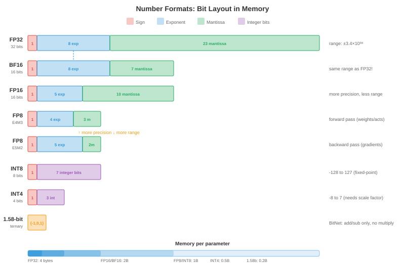

量化¶
量化降低模型权重和激活值的精度，使模型更小、更快、运行成本更低。本文涵盖数字格式、训练后量化、量化感知训练、仅权重量化方法（GPTQ、AWQ）、激活值量化、混合精度和KV缓存量化
-
一个70B参数的float16模型需要140 GB内存，超过任何单张GPU。量化为INT4后，它可以装入35 GB（一张A100）甚至20 GB（带卸载的消费级RTX 4090）。量化不是一种可有可无的优化；它是让大模型部署在经济上可行的关键。
-
基本权衡：低精度意味着更少内存、更高吞吐量和更低功耗，但会引入量化误差，可能降低模型质量。量化的艺术在于最小化这种降级。
为什么要量化¶
-
内存减少：INT8比FP16小2倍，INT4小4倍。对于LLM，模型权重占主导内存。精度减半意味着内存需求减半。
-
吞吐量提升：低精度意味着每秒更多操作。NVIDIA Tensor Core（第16章）在FP16 vs FP32上实现2倍吞吐量，INT8 vs FP16再实现2倍，INT4 vs INT8再实现2倍。H100在FP8下达到989 TFLOPS，而FP32下只有67 TFLOPS——相差15倍。
-
带宽节省：LLM推理通常是内存带宽受限的（第16章，屋顶模型）。瓶颈是从GPU内存加载权重，而不是计算。更小的权重意味着更少的传输字节，直接提高每秒token数。这就是量化通常能为LLM推理带来近乎线性加速的原因。
-
节能：低精度每次操作消耗更少能量。在数据中心规模（数千GPU）下，这转化为显著的电力成本降低。
数字格式¶
- 我们在第13章（计算机体系结构）中介绍了IEEE 754浮点数。以下是ML的完整精度全景：

| 格式 | 位数 | 指数 | 尾数 | 范围 | 用途 |
|---|---|---|---|---|---|
| FP32 | 32 | 8 | 23 | ±3.4×10³⁸ | 训练（黄金标准） |
| TF32 | 19 | 8 | 10 | ±3.4×10³⁸ | Tensor Core训练（A100+） |
| FP16 | 16 | 5 | 10 | ±65504 | 混合精度训练 |
| BF16 | 16 | 8 | 7 | ±3.4×10³⁸ | 训练（与FP32相同的范围） |
| FP8 E4M3 | 8 | 4 | 3 | ±448 | 前向传播（Hopper+） |
| FP8 E5M2 | 8 | 5 | 2 | ±57344 | 梯度（更宽范围） |
| INT8 | 8 | — | — | -128 到 127 | PTQ推理 |
| INT4 | 4 | — | — | -8 到 7 | 仅权重量化 |
| INT2/三值 | 2 | — | — | {-1, 0, 1} | 极限压缩 |
-
FP8有两种变体：E4M3（4位指数，3位尾数，范围较窄但精度更高）用于前向传播，E5M2（5位指数，2位尾数，范围更宽但精度较低）用于梯度。Transformer Engine（第16章）在每个张量之间自动切换。
-
BF16 vs FP16：BF16具有与FP32相同的指数范围（无溢出风险），但尾数精度较低。FP16精度更高但范围较窄（最大65504），训练时需要损失缩放。对于推理，两者都表现良好；对于训练，BF16更安全。
-
整数格式没有指数——它们表示定点值。要在浮点和整数之间转换，需要一个缩放因子和一个可选的零点：\(x_{\text{float}} = \text{scale} \times (x_{\text{int}} - \text{zero\_point})\)。
量化方程¶
- 所有量化方法都将浮点值映射到整数并返回：
-
缩放因子决定分辨率：\(\text{scale} = \frac{x_{\max} - x_{\min}}{q_{\max} - q_{\min}}\)。对于INT8：\(q_{\min} = -128\)，\(q_{\max} = 127\)。
-
对称量化设置\(\text{zero\_point} = 0\)，因此\(\text{scale} = \frac{\max(|x|)}{127}\)。更简单、更快（推理时无需减去零点）。
-
非对称量化使用非零\(\text{zero\_point}\)来处理非对称分布（例如，ReLU输出全为非负）。将\([x_{\min}, x_{\max}]\)映射到无符号INT8的\([0, 255]\)。

- 量化粒度：多少个值共享同一个缩放因子：
- 逐张量：整个张量一个缩放因子。最简单但精度最低（一个异常值就会扭曲整个张量的缩放因子）。
- 逐通道：每个输出通道（卷积）或每行（线性层）一个缩放因子。精度好得多，开销最小。
- 逐组：每\(g\)个元素一组（例如\(g = 128\)）一个缩放因子。精度最佳，用于现代仅权重量化（GPTQ、AWQ）。
- 逐token：每个token一个缩放因子用于激活值。处理不同token激活值幅度差异很大的情况。
训练后量化（PTQ）¶
- PTQ量化预训练模型而不需要重新训练。通过校准集（一个小的代表性数据集，通常128-512个样本）输入模型收集激活值统计信息，然后计算最优缩放因子。
校准方法¶
-
最小-最大：基于观察到的最小值和最大值设置缩放因子。简单但容易受异常值影响（一个极端值将大部分量化范围浪费在很少使用的值上）。
-
百分位数：使用99.99百分位数而不是绝对最大值。裁剪极端异常值，为大多数值提供更好的分辨率。裁剪后的值饱和到\(q_{\min}\)或\(q_{\max}\)。
-
MSE最优：找到最小化原始张量和量化张量之间均方误差的缩放因子。这是一个一维优化（搜索可能的裁剪值），通常给出最好的PTQ精度。
-
基于熵（KL散度）：找到最小化原始和量化值分布之间KL散度的缩放因子。用于TensorRT的INT8校准。
PTQ实践¶
# 使用PyTorch的简化PTQ（概念性）
import torch
def quantise_tensor_symmetric(tensor, bits=8):
qmax = 2 ** (bits - 1) - 1 # INT8的127
scale = tensor.abs().max() / qmax
quantised = torch.clamp(torch.round(tensor / scale), -qmax, qmax).to(torch.int8)
return quantised, scale
def dequantise(quantised, scale):
return quantised.float() * scale
# 量化一个权重矩阵
weight = torch.randn(512, 512) # 预训练权重
weight_q, scale = quantise_tensor_symmetric(weight, bits=8)
weight_reconstructed = dequantise(weight_q, scale)
# 量化误差
error = (weight - weight_reconstructed).abs().mean()
print(f"平均绝对误差: {error:.6f}")
print(f"压缩比: {weight.numel() * 4 / (weight_q.numel() * 1 + 4):.1f}x") # +4字节用于缩放因子
- PTQ在INT8上对大多数模型效果良好，精度下降<1%。对于INT4，PTQ质量显著下降——仅权重量化方法（见下文）处理INT4要好得多。
量化感知训练（QAT）¶
- QAT在训练图中插入伪量化操作：在前向传播中，权重和激活值被量化和反量化，但梯度像没有量化一样流过（直通估计器）。
-
模型在训练过程中学会了抵抗量化噪声。QAT通常能恢复PTQ损失的全部或大部分精度，特别是在低位宽（INT4、INT2）下。
-
成本：QAT需要重新训练（或微调）模型，这对大模型来说成本高昂。对于一个70B参数模型，QAT可能需要\(10,000-\)100,000的计算成本。PTQ基本上零成本（只需校准）。
-
何时使用QAT：当PTQ质量不可接受时（通常是INT4或更低），当部署到有严格延迟预算的边缘设备时，或者当模型将被量化数百万次时（一次性QAT成本被摊销）。
仅权重量化¶
- 对于LLM推理，瓶颈是从内存加载权重，而不是计算（内存带宽受限模式）。仅权重量化将权重量化为INT4或INT3，而保持激活值为FP16。计算在FP16中进行（在运行时反量化权重），但内存消耗和带宽减少了4-8倍。
GPTQ¶
- GPTQ（Frantar等人，2022）一次量化一列权重，通过调整后续列来补偿每列的误差。它使用Hessian矩阵（来自校准集的二阶信息）来确定最优量化顺序和误差补偿：
-
关键洞察：量化第\(j\)列会引入误差。GPTQ立即通过调整所有剩余列来补偿，使得该层的整体输出（\(XW\)）变化尽可能小。这是应用于Transformer的最优脑量化（OBQ）。
-
使用4位组量化（组大小128）的GPTQ在大多数LLM上达到<1%的困惑度降级。在单GPU上，70B模型的量化大约需要1小时。
AWQ¶
-
AWQ（激活感知权重量化，Lin等人，2023）观察到一小部分权重通道（1-3%）比其他通道重要得多——它们对应于具有大幅度的激活通道。保护这些显著通道可以大幅降低量化误差。
-
AWQ在量化前将这些重要通道乘以一个因子\(s\)（使它们变大，因此受舍入影响更小），并将相应的激活值乘以\(1/s\)（以保持输出不变）。缩放因子\(s\)按组优化，以最小化整体量化误差。
-
AWQ比GPTQ更简单（无需Hessian计算），运行更快，并达到可比较的质量。它已成为许多开源LLM量化流程的默认选择。
GGUF / llama.cpp量化¶
-
GGUF（GGML通用格式）是llama.cpp用于CPU推理的格式。它支持多种量化方案：
- Q4_0：4位，32元素块，对称。
- Q4_K_M：4位，带混合精度重要通道（k-quants）。
- Q5_K_M：5位，带k-quants（更高质量）。
- Q8_0：8位，简单快速。
-
"K"变体（k-quants）为重要的权重块分配更多位，类似于AWQ的洞察但实现在格式层面。Q4_K_M是大多数模型的最佳选择：平均4位，质量损失最小。
QuIP和QuIP¶
-
QuIP（Chee等人，2023）引入了非相干处理：在量化之前使用随机正交变换旋转权重矩阵。这会将信息分散到所有权重上，防止少数异常权重主导量化误差。
-
直觉：如果一个权重是100，其余的大约是1，用相同的缩放因子量化所有权重会浪费INT4的大部分范围在异常值上。经过正交旋转（保持矩阵的数学性质）后，所有权重具有相似幅度，均匀量化效果更好。
-
QuIP# 通过格点码本扩展了这一思想：不是映射到均匀整数网格，而是映射到最优格点中的点（8D中的E8格点）。格点编码在相同位数内打包更多量化点，实现了比均匀量化更好的率失真性能。QuIP#在2位精度下达到了可用质量——典型INT4方法的一半位数。
SpQR¶
-
SpQR（Dettmers等人，2023）观察到极小一部分权重（0.1-1%）是异常值，对输出质量的贡献不成比例。SpQR不是将所有内容量化到相同精度，而是：
- 使用敏感性分析（量化这个权重会改变层输出多少？）识别异常权重。
- 以全精度（FP16）的稀疏格式存储异常值。
- 将所有剩余权重量化为INT3或INT4。
-
结果：~99%的权重被积极量化（小），而关键的1%保持全精度（准确）。稀疏异常值存储增加的开销最小（占总大小的<5%）。
HQQ¶
-
HQQ（半二次量化，Badri & Shaji，2023）是一种零样本权重量化方法，完全不需要校准数据。它将量化表述为一个半二次优化问题，迭代求解最优量化权重和缩放因子。
-
优势：无需校准集意味着没有数据依赖，即时量化，也没有校准数据不匹配的风险。HQQ对于无法获得代表性校准数据或数据敏感型的模型特别有用。
AQLM¶
- AQLM（Egiazarian等人，2024）将加法量化（多码本向量量化）应用于LLM。AQLM不是独立量化每个权重，而是将权重分组为向量，并将每个向量表示为来自多个学习到的码本的条目之和：
- 其中\(\mathbf{c}_i^{(m)}\)是来自码本\(m\)的一个条目。有\(M = 2\)个码本，每个有256个条目，一个8元素向量被编码为两个8位索引 = 8个权重2字节 = 每个权重有效2位。AQLM在2位精度下达到了最先进的质量，在这个极限压缩水平上优于GPTQ和AWQ。
BitNet和1位LLM¶
-
BitNet（Wang等人，2023）将量化推向极致：权重是三值的（\(\{-1, 0, +1\}\)），每个权重仅需约1.58位。矩阵乘法变成只有加法和减法——不需要浮点乘法。
-
BitNet b1.58（Ma等人，2024）将每个权重约束为\(\{-1, 0, +1\}\)。"1.58位"来自\(\log_2(3) \approx 1.58\)。在这个精度下，一个70B模型适合约15 GB，推理不需要乘法运算——只需加、减和符号翻转。
-
矩阵乘法变成：
- 这比在任何硬件上的FP16矩阵乘法都要便宜得多，并且可以在没有浮点单元的设备上实现LLM推理。对于当前模型，质量权衡是显著的，但随着规模和训练时量化感知能力的提高而改善。
微缩放（MX）格式¶
- 微缩放（MX）格式是一种新的行业标准（由AMD、Arm、Intel、Meta、Microsoft、NVIDIA、Qualcomm支持），使用块浮点：一组元素共享一个指数，每个元素有自己的尾数。
| 格式 | 共享指数 | 元素位数 | 总计（每元素） | 等价 |
|---|---|---|---|---|
| MXFP8 | 每块8位 | 8（E4M3/E5M2） | ~8 | 类似FP8，范围更好 |
| MXFP6 | 每块8位 | 6 | ~6.5 | 介于FP8和INT4之间 |
| MXFP4 | 每块8位 | 4 | ~4.5 | 类似INT4，但有浮点行为 |
| MXINT8 | 每块8位 | 8（整数） | ~8.5 | INT8，带共享缩放 |
- 共享指数将指数成本分摊到一个块（通常16-32个元素）。每个元素比单独指数时保留更多尾数位，每位的精度更好。MX格式预计将在未来硬件中替代单独的FP8和INT8格式。
FP8训练¶
-
在FP8中训练（不仅仅是推理）现在在NVIDIA Hopper和Blackwell GPU上可行。方案如下：
-
前向传播：权重和激活值使用E4M3（更高精度，更窄范围）。Transformer Engine使用延迟缩放（跟踪上一次迭代的统计信息，应用于当前迭代）动态计算每张量缩放因子。
-
反向传播：梯度使用E5M2（更宽范围，更低精度）。梯度的值范围比权重/激活值更广，因此额外的指数位防止溢出。
-
主权重：以FP32维护，用于优化器状态（就像使用FP16的标准混合精度训练，第6章）。FP8计算仅用于矩阵乘法，不用于权重更新。
-
损失缩放：FP8仍然需要，就像FP16一样。动态损失缩放器调整缩放因子，使梯度值保持在FP8的可表示范围内。
-
-
FP8训练在大多数模型规模上达到与BF16训练相当的质量，吞吐量提高约2倍。它是在H100集群上进行新的大规模训练运行的默认选择。
激活值量化¶
-
激活值（层之间流动的中间张量）也可以量化，实现完全INT8计算（权重和激活值都是INT8，INT32累加）。
-
动态量化：在运行时根据实际激活值计算缩放因子。更准确（适应每个输入），但增加开销（每层计算最小值/最大值或百分位数）。
-
静态量化：在校准期间计算一次缩放因子并固定。推理时更快（无需运行时统计），但如果校准数据不具代表性则精度较低。
-
逐token量化：为序列中的每个token计算单独的缩放因子。对LLM至关重要，因为不同token的激活值幅度可能差异很大（某些token的激活值比其他token大100倍）。
-
激活值量化比权重量化更难，因为激活值依赖于数据（它们随每个输入变化），而权重是固定的。"异常值"问题尤其严重：少数激活通道具有极值（平均值的100倍），用与正常通道相同的缩放因子量化它们会浪费精度。
-
SmoothQuant（Xiao等人，2022）通过数学上将量化难度从激活值（由于异常值难以量化）迁移到权重（易于量化）来解决异常值问题：将激活值乘以\(1/s\)，权重乘以\(s\)，其中\(s\)平衡难度。输出\(XW = (X \cdot \text{diag}(s^{-1})) \cdot (\text{diag}(s) \cdot W)\)保持不变。
混合精度量化¶
-
并非所有层对量化的敏感度相同。注意力层通常可以容忍INT4，而嵌入层和最终分类器需要更高精度。
-
敏感性分析：逐层量化并测量精度影响。敏感性高的层获得更多位；不敏感的层获得更少位。
-
Transformer Engine（第16章，NVIDIA Hopper）在操作级别实现动态混合精度：每个矩阵乘法根据张量统计信息在FP8和FP16之间选择，最大化吞吐量同时保持质量。
KV缓存量化¶
- 在LLM生成过程中，KV缓存存储所有先前token的键和值张量。对于长序列，这主导了内存：
-
一个70B模型，80层，64头，128维头，序列长度128K，FP16：\(2 \times 80 \times 64 \times 128 \times 131072 \times 2 = 330\) GB。这超过了GPU内存。
-
KV缓存量化通过将缓存的键和值以INT8或INT4而不是FP16存储来减少内存。量化误差在序列中累积（每个新token关注所有缓存的K/V），但使用逐通道或逐头量化后，降级是可以接受的。
-
KV缓存量化具有乘法级收益：它支持更长的序列（更多上下文）、更大的批次大小（更多并发用户）和更快的推理（加载缓存所需的内存带宽更少）。这是LLM服务中影响最大的优化之一。
编程任务（使用CoLab或notebook）¶
-
从头实现对称INT8量化。量化一个权重矩阵，反量化它，并测量作为值分布函数的重建误差。
import jax.numpy as jnp import jax def quantise_int8(tensor): scale = jnp.max(jnp.abs(tensor)) / 127.0 quantised = jnp.clip(jnp.round(tensor / scale), -127, 127).astype(jnp.int8) return quantised, scale def dequantise(quantised, scale): return quantised.astype(jnp.float32) * scale # 正常权重（典型训练模型） key = jax.random.PRNGKey(0) weights = jax.random.normal(key, (1024, 1024)) * 0.02 q, s = quantise_int8(weights) recon = dequantise(q, s) print(f"原始: {weights.nbytes / 1024:.0f} KB") print(f"量化后: {q.nbytes / 1024:.0f} KB ({weights.nbytes / q.nbytes:.0f}x 更小)") print(f"平均绝对误差: {jnp.abs(weights - recon).mean():.6f}") print(f"最大绝对误差: {jnp.abs(weights - recon).max():.6f}") print(f"相对误差: {jnp.abs(weights - recon).mean() / jnp.abs(weights).mean():.4%}") -
演示异常值问题。创建具有几个极端通道的激活值，展示逐张量量化失败而逐通道量化成功。
import jax.numpy as jnp import jax key = jax.random.PRNGKey(42) # 激活值：大多数通道正常，2个通道有100x异常值 activations = jax.random.normal(key, (32, 512)) * 0.1 activations = activations.at[:, 0].set(activations[:, 0] * 100) # 异常通道 activations = activations.at[:, 1].set(activations[:, 1] * 50) # 异常通道 # 逐张量量化（整个张量一个缩放因子） scale_tensor = jnp.max(jnp.abs(activations)) / 127.0 q_tensor = jnp.clip(jnp.round(activations / scale_tensor), -127, 127) recon_tensor = q_tensor * scale_tensor # 逐通道量化（每通道一个缩放因子） scales_channel = jnp.max(jnp.abs(activations), axis=0) / 127.0 q_channel = jnp.clip(jnp.round(activations / scales_channel), -127, 127) recon_channel = q_channel * scales_channel err_tensor = jnp.abs(activations - recon_tensor).mean() err_channel = jnp.abs(activations - recon_channel).mean() print(f"逐张量误差: {err_tensor:.6f}") print(f"逐通道误差: {err_channel:.6f}") print(f"逐通道好 {err_tensor / err_channel:.1f}x") print(f"\n异常通道浪费了 {(activations.shape[1] - 2) / activations.shape[1]:.0%} " f"的量化范围给 {2 / activations.shape[1]:.1%} 的通道") -
计算不同模型大小和序列长度的KV缓存内存。展示为什么KV缓存量化对长上下文模型至关重要。
def kv_cache_gb(n_layers, n_heads, d_head, seq_len, bytes_per_elem): return 2 * n_layers * n_heads * d_head * seq_len * bytes_per_elem / 1e9 models = [ ("Llama-7B", 32, 32, 128), ("Llama-70B", 80, 64, 128), ("GPT-4 (估计)", 120, 96, 128), ] print(f"{'模型':<15} {'序列长度':>8} {'FP16 (GB)':>10} {'INT8 (GB)':>10} {'INT4 (GB)':>10}") print("-" * 60) for name, layers, heads, d_head in models: for seq_len in [4096, 32768, 131072]: fp16 = kv_cache_gb(layers, heads, d_head, seq_len, 2) int8 = kv_cache_gb(layers, heads, d_head, seq_len, 1) int4 = kv_cache_gb(layers, heads, d_head, seq_len, 0.5) print(f"{name:<15} {seq_len:>8} {fp16:>9.1f} {int8:>9.1f} {int4:>9.1f}") print()